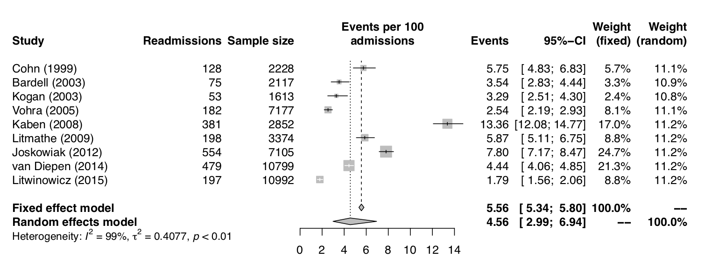

Tähän kirjoitetaan posterin keskeisin löydös. Käytä lihavointia merkitsemään tärkeät sanat.
Posterin / abstraktin otsikko kirjoitetaan tähän. Jos se on kovin pitkä, jakautuu se kahdelle riville.
Juuso N. Tamminen 1, 2, 
@juksu
juuso.tamminen@kuh.fi
Ylilääkäri Ylermi1 Pertti Professori1 Tauno Dosentti1, 3
1 School of Medicine, University of Eastern Finland
2 Department of Anesthesiology and Intensive Care, Kuopio University Hospital
3 Department of Cardiology, Kuopio University Hospital
Johdanto
Aikaisempi tutkimustieto osoittaa, että tämä tosi tärkeä juttu saattaa lisätä kiinnostusta tutkimuksen tekemiseen. Saataa myös olla että näin ei ole.
Koska emme voi olla varmoja, päätimme tehdä tämän tutkimuksen. Tässä on yksi tosi tärkeä viite aiheeseen (Turner et al. 2014).
Menetelmät
Haastattelimme vuosina 2008-2015 Itä-Suomen yliopistosta valmistuneita lääketieteen opiskelijoita (
N=1312).Kyselimme heiltä kaikenlaisia erikoisia kysymyksia erilaisiin aiheisiin liittyen. Useimmat heistä vastasivat todella mielellään tähän tärkeään tutkimukseemme.
Tulokset
Tässä on esitetty taulukko, jossa on viisi saraketta ja useita rivejä. Se sisältää tärkeää ja keskeistä tietoa, joka tukee tutkimuksen johtopäätelmiä.
| Komplisoitumaton | Readmissio tai MET-käynti | p | ||
|---|---|---|---|---|
| Potilaita yhteensä | N (%) | 490 (90.2 %) | 53 (9.8 %) | |
| Ikä | Keskiarvo (SD) | 63.7 (12.1) | 64.5 (12.4) | 0.66 |
| Sukupuoli | Nainen | 139 (28.4 %) | 16 (30.2 %) | 0.91 |
| Mies | 351 (71.6 %) | 37 (69.8 %) | ||
| Toimenpide | AVR bio, stentillinen | 147 (30.0 %) | 14 (26.4 %) | 0.20 |
| AVR bio, stentitön | 2 (0.4 %) | 1 (1.9 %) | ||
| AVR mekaaninen | 155 (31.6 %) | 15 (28.3 %) | ||
| MVPL pelkkä rengas | 3 (0.6 %) | |||
| MVPL valvuloplastia (+ rengas) | 145 (29.6 %) | 16 (30.2 %) | ||
| MVR bio | 7 (1.4 %) | 3 (5.7 %) | ||
| MVR mekaaninen | 11 (2.2 %) | |||
| TVPL | 20 (4.1 %) | 4 (7.5 %) | ||
| Hengityslaitehoidon kesto teho-osastolla (tunteja) | Keskiarvo (SD) | 8.1 (2.9) | 8.0 (2.5) | 0.81 |
| Diureesi tehohoidon aikana (millilitraa) | Keskiarvo (SD) | 1925.1 (687.3) | 1802.3 (549.5) | 0.21 |
Merkittävät nostotlöydöksistä on syytä esittää tässä omina bullet-pointteina.On hyvä korostaa, että
eroja ei havaitturyhmien välillä.Tämä voi johtua mm. siitä, että
tutkimusaineisto oli liiaan pienitämän muutoksen havaitsemiseen.

Johtopäätökset
Tähän kirjoitetaan tutkimuksen keskeinen johtopäätös. On tärkeää korostaa assosiaatiota asioiden välillä. Tämä ei tietenkään pidä paikkaansa, mutta kirjoittelen tähän mitä sattuu, jotta saisin vähän sisältöä tähän posteriin.
Voi myös olla, että kysymyksen asettelu oli väärä.
Sidonnaisuudet
Juuso Tamminen on saanut palkkaa työnantajaltaan. Tällä palkalla hän rahoittaa harrastuksensa, mm. posteri templaattien puuhastelua.
Muilla kirjoittajilla on todella paljon sidonnaisuuksia. Ylilääkäri Ylermi on saanut apurahaa (GWS4040112) Tosi Tärkeältä Lääketieteen säätiöltä. Lisäksi hän on toiminut luennoistijana Isolle Lääkeyritykselle.
Kirjallisuus
Turner, Kevin W., Brent B. Wolfe, Thomas W. D. Edwards, Trevor C. Lantz, Roland I. Hall, and Guillaume Larocque. 2014. “Controls on Water Balance of Shallow Thermokarst Lakes and Their Relations with Catchment Characteristics: A Multi-Year, Landscape-Scale Assessment Based on Water Isotope Tracers and Remote Sensing in Old Crow Flats, Yukon (Canada).” Global Change Biology 20 (5): 1585–1603. https://doi.org/10.1111/gcb.12465.